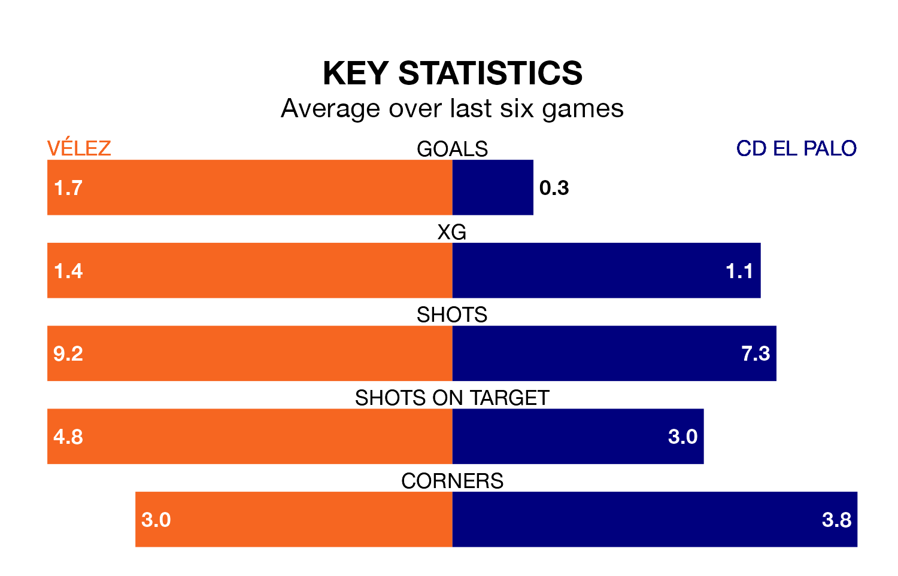

CD El Palo come to the Estadio Vivar Téllez to play Vélez on Sunday in poor form, having collected just three points from their last six games.
The visitors have won just one of their last six fixtures, while Vélez have three wins and two draws.
With 10 goals in 17 games so far this season, El Palo are the league's lowest scorers with 0.6 goals per game. And they are conceding at an average rate, letting in 19 goals at a rate of 1.1 per game.
Vélez, meanwhile, are above average scorers, with 1.3 goals per game, compared to a league average of 1.1. They have conceded 1.1 goals per game.
El Palo are 16th in the table after 17 games, of which they have won four and drawn four, earning 16 points.
The home side are nine places ahead of the visitors in seventh, with six wins and eight draws putting them on 26 points.
Vélez's last match was on January 7, a 3-1 win against UCAM Murcia CF.
El Palo lost 3-0 against Sevilla B last time out, also on January 7.
Updated: 10:50, 10/01/24